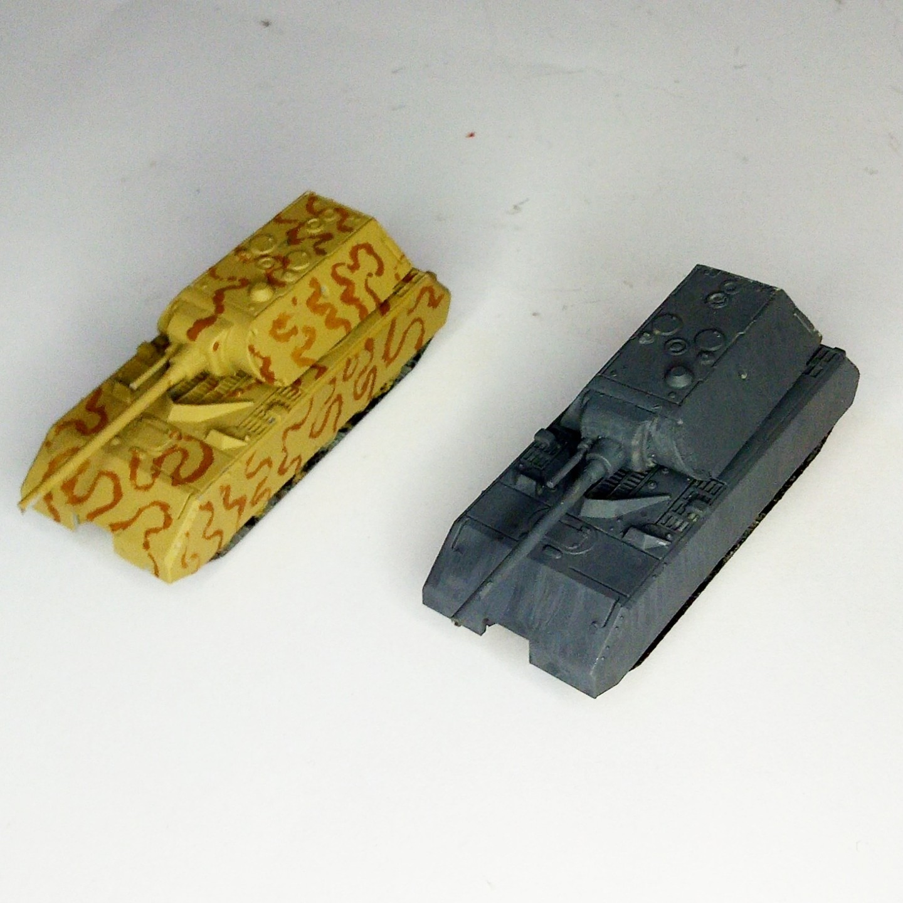

Mezzi militari · scale model archive
'Maus' super heavy tank
'Maus' super heavy tank — Kit: Takom, Scale: 1/144. These two models were included in the Landkreuzer 'Ratte' model kit #1/144 #Takom

Photo gallery
English description
These two models were included in the Landkreuzer 'Ratte' model kit
#1/144 #Takom
Descrizione italiana
These two modellos erano included nel Landkreuzer 'Ratte' modello kit.